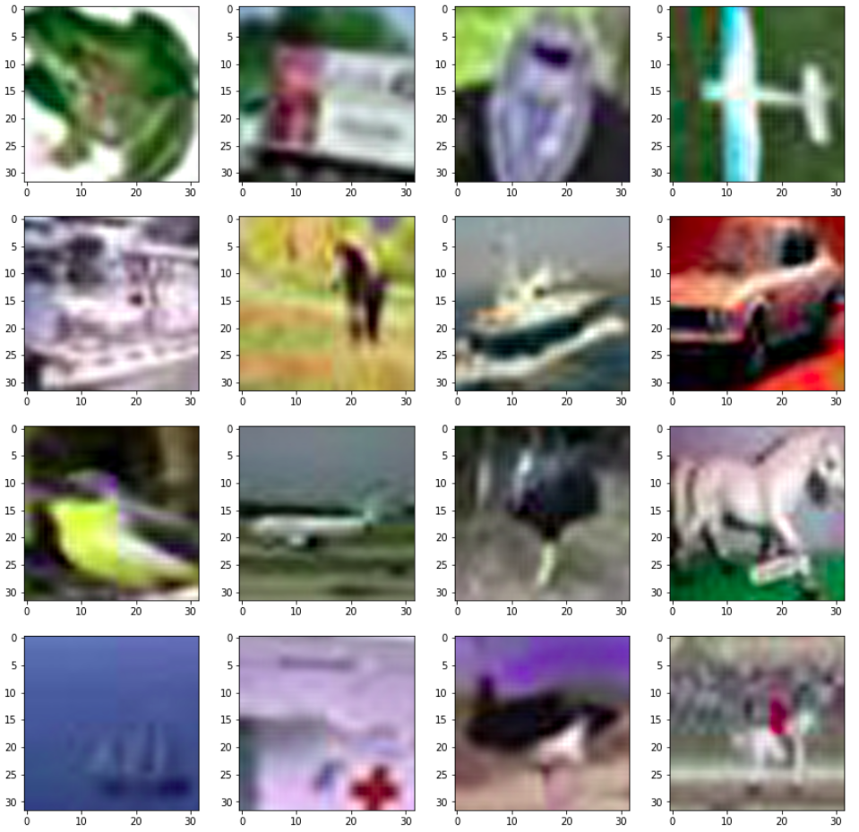
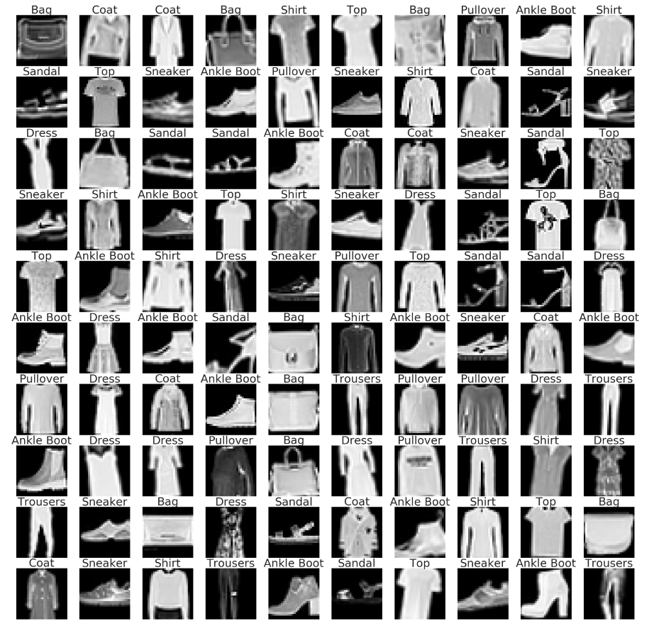

Facial Expression Classifier
Using Keras.

The Approach
Finding the right dataset was my first goal. After a bit of googling, I stumbled upon the FER-2013 dataset on kaggle. The data consists of 48x48 pixel grayscale images of faces which belonged to the following classes:
AngryDisguistFearHappySadSurpriseNeutral The faces have been automatically registered so that the face is more or less centered and occupies about the same amount of space in each image. I used OpenCV’s Haar cascades to detect and extract the facial region from the webcam video feed and then display the corresponding emoji (one of 7 classes) depending on the output from the trained model.
Hurdles Faced
The first hurdle was the training time. My laptop was taking around 2 minutes for a single training epoch, I tried using colab and it was way faster (17 seconds per epoch). The accuracy was around 45 but I kept making changes which finally improved the accuracy to 67%. I was able to successfully pass images through the model but using direct video feed from the webcam was a challenge. I used two seperate matplotlib windows, one as a monitor, another displaying the output in form of an emoji.
Things I learnt
I learnt to use OpenCV’s Haar cascades to detect faces which aided the cropping mechanism. I also figured out how to refresh matplotlib plots depending on the output from the trained model. I learnt how to implement webcam input in Python using CV2 which will surely come in handy on other computer-vision related tasks.
The Approach
The aim is to train a model to predict the quality of red-wine using chemical properties such as pH, density, alcohol percentage etc.
The dataset contains 12 columns, 11 of which describe the chemical properties of wine,
the last column corresponds to its quality. The quality of wine is directly correlated to its chemical composition,
these chemical attributes can be used to train a deep learning model to predict its quality. There were no categorical attributes and no null values in the data. The pre-processing involved:
Converting all values to floatScaling the values using the MinMaxScaler.Splitting the data into training, test and validation sets.Converting all arrays into torch.Tensor.
Hurdles Faced
The accuracy values were very low (around 50) in the first few attempts. The batch size was too low which I didn't notice. Another major factor is that the data is extremely unbalanced. For example there are 681 instances of the quality '5', 199 instances of '7' and only 10 instances of '3'. I'll try to use SMOTE (Synthetic Minority Oversampling Technique) which generates virtual training records by linear interpolation for the minority class. These synthetic training records are generated by randomly selecting one or more of the k-nearest neighbors for each example in the minority class.
Things I learnt
I learnt to use learning rate schedulers from the torch.optim package (from PyTorch), which improved the accuracy by around 20%.
The current accuracy is 72%, I'm sure that balancing the classes will improve the accuracy.

The Approach
I downloaded the raw jpeg format on purpose to get comfortable with handling RGB-image datasets. The dataset consists of 60,000 32x32x3 (RGB) images in 10 classes, with 6,000 images per class. There are 50,000 training images (5,000 per class) and 10,000 test images.
I used a custom Augmentor pipeline which augmented training images (rotate, mirror, and zoom) randomly while training .
Hurdles Faced
I had worked with black-and-white image datasets before, this was the first time I was handling RGB images. Getting the augmentor pipeline to work was a pain. Building the training loop also required some effort.
Things I learnt
I learnt augment RGB images and devised a checkpoint mechanism (during training) to prevent training multiple times. This knowledge will surely help if I encounter another RGB image dataset in the future.

The Approach
Zalando SE is a European e-commerce company based in Berlin, Germany. Fashion-MNIST is a dataset of Zalando's article images consisting of a training set of 60,000 labled examples. I was watching online lectures and was implementing whatever I learnt on this dataset.
Hurdles Faced
This was the first time I was using the PyTorch library, so the whole thing was a hurdle for me. The online tutorials and the docs kept me from drowning.
Things I learnt
I learnt basic stuff like passing a single image through a trained model, basic image processing, augmentation etc. Later, these skills turned out to be super handy.